规划组件设计#
目的#
自动驾驶系统中的规划组件在为自动驾驶汽车生成目标轨迹(路径和速度)方面起着至关重要的作用.它确保安全并遵守交通规则,完成特定任务.
本文档概述了 Autoware 中的规划要求和设计,帮助开发人员理解规划组件的设计和可扩展性.
本文档分为两部分：第一部分讨论高级需求和设计,后半部分重点介绍实际实现和提供的功能.
目标和非目标#
我们的目标不仅仅是开发自动驾驶系统.我们的目标是提供一个 自动驾驶平台 ,用户可以根据自己的需求增强自动驾驶功能.
在 Autoware 中,我们利用了 微自治架构 概念,该概念强调高可扩展性、功能模块化和明确定义的接口.
考虑到这一点,规划组件的设计策略并不侧重于解决每个复杂的自动驾驶场景(因为这是一个非常具有挑战性的问题),而是 提供可定制且易于扩展的 Planning 开发平台.我们相信这种方法将使平台能够满足广泛的需求,最终解决许多复杂的用例.
为了阐明此政策,目标和非目标定义如下：
目标：
- 提供基本功能,以便可以定义一个简单的 ODD
- 在扩展其功能之前,规划组件必须提供自动驾驶所需的基本功能.这包括移动、停止和转弯等基本作,以及在相对安全和简单的环境中处理变道和避障.
- 功能模块化,支持用户驱动的扩展
- 该系统旨在适应具有扩展功能的各种运营设计域 (ODD).模块化类似于插件,允许创建针对不同需求量身定制的系统,例如不同级别的自动驾驶和各种车辆或环境应用(例如,Lv4/Lv2 自动驾驶、公共/私人道路驾驶、大型车辆、小型机器人).
- 减少特定 ADD 的功能,例如无障碍私家道路,也是一个关键方面.这种模块化方法可降低功耗或传感器要求,从而满足特定的用户需求.
- 该功能可根据人工作员的决定进行扩展
- 结合作员辅助是功能扩展的一个关键方面.这意味着该系统可以在人工支持下适应复杂且具有挑战性的场景.此处未定义运算符的具体类型.可能是原型开发阶段在车辆中陪伴的人,也可能是在自动驾驶服务期间在紧急情况下连接的远程作员.
非目标：**
规划组件旨在通过第三方模块进行扩展.因此,以下不是 Autoware 的 Planning Component 的目标：
- 默认提供所有用户所需的功能.
- 提供自动驾驶系统的完整功能和性能特征.
- 提供始终超越人类能力或确保绝对安全的性能.
这些方面特定于我们对自动驾驶 平台 的愿景,可能不适用于典型的自动驾驶规划组件.
高级设计#
此图说明了 Planning Component 的高级体系结构.这表示一种理想化的设计,当前的实现可能会有所不同.本文档的后面部分提供了有关实施的更多详细信息.
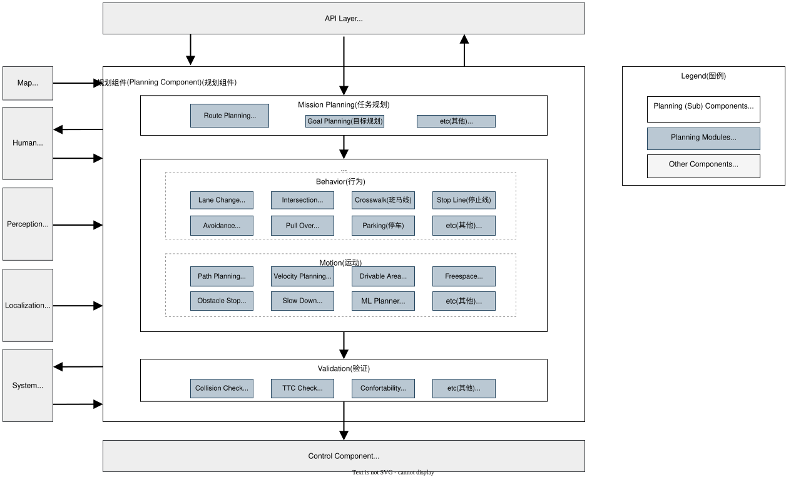
遵循微自治架构的原则,我们采用了模块化的系统框架.Planning 域中的功能以模块的形式实现,可根据特定用例进行动态或静态调整.这包括用于变道、交叉路口处理和人行横道等的模块.
规划组件 由几个子组件组成：
- 任务规划：该模块利用地图数据计算从当前位置到目的地的路线.它的功能类似于车队管理系统 (FMS) 或汽车导航路线规划的功能.
- 规划模块：这些模块为分配的任务规划无人机的行为,包括目标轨迹、闪光灯信号等.它们分为 Behavior (行为) 和 Motion (运动) 类别：
- 行为：专注于计算安全且符合规则的路线,管理变道、交叉路口入口和在停车线停车的决策.
- 运动：与行为模块配合使用,确定车辆的轨迹,同时考虑其运动和乘坐舒适性.它包括用于路线整形和速度计算的横向和纵向规划.
- 验证：确保计划轨迹的安全性和适当性,并具有应急响应能力.在计划轨迹不合适的情况下,它会触发紧急协议或生成替代路径.
突出#
此高级设计的关键方面包括：
每个函数的调制#
基本的规划功能,如路线生成、车道变换和交叉路口管理,都是模块化的.这些模块带有标准化接口,可轻松添加或修改.有关这些接口的更多详细信息将在后续部分中讨论.有关如何启用/禁用每个模块的详细信息,请参阅 Planning 的实现文档.
任务规划子组件的分离#
任务规划可以替代 FMS(车队管理系统)等现有服务中通常包含的功能.在高级设计中遵守定义的接口有助于与第三方服务轻松集成.
验证子组件的分离#
鉴于规划组件的可扩展性,确保所有功能的安全水平一致是一项挑战.因此,验证功能独立于核心规划模块进行管理,即使规划模块的任意更改也能保持安全基线.
HMI 接口 (Human Machine Interface)#
HMI 旨在与人类作员顺利合作.这些接口可实现规划组件和作员之间的协调,无论是在车内还是远程.
规划和其他组件分离的权衡#
在 Autoware 的总体设计中,规划、感知、定位和控制等组件的分离有助于与第三方模块的协作.但是,这种分离需要在性能和可扩展性之间进行权衡.例如,由于 Perception 组件与 Planning 分离,因此可能会处理不必要的对象.同样,将规划和控制分开可能会给规划期间的车辆动力学考虑带来挑战.为了缓解这些问题,我们可能需要增强接口信息或增加计算工作量.
自定义功能#
规划组件设计的一个重要特点是它能够与外部模块集成.下图显示了合并外部功能的各种方法.
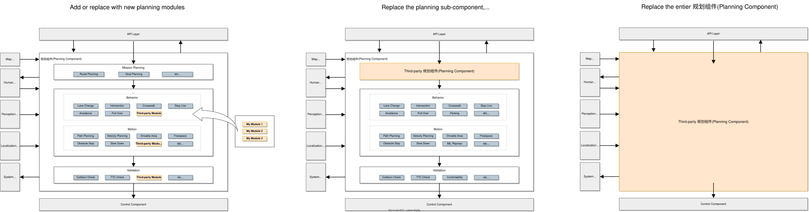
1.向 Planning 组件添加新模块#
用户可以用新模块来增强或替换现有的 Planning 功能.这种方法通常用于扩展功能,允许添加所需 ODD 中不存在的功能或简化现有功能.
但是,添加这些功能需要组织良好的模块接口.截至 2023 年 11 月,理想的模块化系统尚未完全建立,存在一些局限性.有关更多信息,请参阅参考实现部分 自定义当前实现中的功能 和 Planning 的实现文档.
2.替换 Planning 的子组件#
子组件级别的协作和扩展可能会引起一些用户的兴趣.这可能涉及用现有的 FMS 服务替换任务规划,或者在利用现有的验证功能的同时合并第三方轨迹生成模块.
遵循 规划组件中的内部接口,此级别的协作和扩展是可行的.虽然与现有 Planning 功能的复杂协调可能受到限制,但它允许某些 Planning 组件功能与外部模块之间的集成.
3.替换整个 Planning 组件#
开发自动驾驶规划系统的组织或研究实体可能有兴趣将其专有的规划解决方案与 Autoware 的感知或控制模块集成.这可以通过替换整个 Planning 系统来实现,遵循组件之间定义的强大而稳定的接口.但是,请务必注意,可能无法与现有 Planning 模块直接协调.
组件接口#
本节介绍 Planning Component 及其内部模块的输入和输出.请参阅 规划组件界面 页面.
规划组件的输入#
- 从地图上
- 矢量地图：包含有关环境的所有静态信息,包括用于路线规划的车道连接信息、用于生成参考路径的车道几何图形以及交通规则相关信息.
- 来自感知
- 检测到的物体信息：提供有关无法提前知道的物体(如行人和其他车辆)的实时信息.Planning Component 计划机动以避免与这些对象发生碰撞.
- 检测到的障碍物信息：提供有关障碍物位置的实时信息,该信息比检测到的对象更原始,用于紧急停止和其他安全措施.
- 占用地图信息：提供有关行人和其他车辆存在的实时信息以及遮挡区域信息.
- 红绿灯识别结果：实时提供每个红绿灯的当前状态.规划组件提取规划路径的相关信息,并确定是否在交叉路口处停车.
- 来自定位(Localization)
- 车辆运动信息：包括自主车辆的位置、速度、加速度和其他与运动相关的数据.
- 从系统
- Operation mode(作模式)：指示车辆是否在 Autonomous (自动驾驶) 模式下运行.
- 来自人机界面 (HMI)
- 功能执行：允许人工作员执行/授权自动驾驶作,例如变道或进入十字路口.
- 来自 API 层
- 目标(目标)：表示规划组件旨在达到的最终位置.
- 检查点：表示到达目的地的路线上的中点.这在路由计算期间使用.
- Velocity limit(速度限制)：设置车辆的最大速度限制.
规划组件的输出#
- 控制
- 轨迹(Trajectory)：提供控制组件必须遵循的平滑姿势、扭曲和加速度序列.轨迹通常为 10 秒长,分辨率为 0.1 秒.
- 转向信号灯：根据计划的机动控制车辆的转向灯,例如向右、向左、危险等.
- 到系统
- 诊断：报告 Planning 组件的状态,指示处理是否正常运行以及是否正在生成安全计划.
- 人机界面 (HMI)
- 功能执行可用性：指示可以执行或需要的作的状态,例如变道或进入交叉路口.
- Trajectory candidate：显示用户执行后将执行的潜在轨迹.
- 到 API 层
- 规划因素：提供有关当前规划行为背后的原因的信息.这可能包括要避开的目标对象的位置、导致决定停止的障碍物以及其他相关信息.
规划组件中的内部接口#
- 任务规划到情景规划
- 路线：为从起点到目的地需要遵循的路径提供指导.此路径是根据地图上定义的车道 ID 等信息确定的.在路由级别,它没有明确指示要采用哪些特定车道,并且路由可以包含多个车道.
- 行为规划到运动规划
- 路径：提供无人机要遵循的粗略位置和速度.这些路径点通常以大约 1 米的间隔定义.尽管可以使用其他间隔距离,但它可能会影响规划组件的精度或性能.
- 可驾驶区域：定义车辆可以行驶的区域,例如车道内或物理上可驾驶的区域.它假设运动规划器将计算此定义区域内的最终轨迹.
- 从情景规划到验证
- Trajectory(轨迹)：定义 Control Component 将尝试遵循的所需位置、速度和加速度.根据轨迹速度,以大约 0.1 秒的间隔定义轨迹点.
- 验证以控制组件
- 轨迹：同上,但有一些额外的安全考虑.
详细设计#
支持的功能#
| 特征 | 描述 | Requirements | Figure | Demonstration |
|---|---|---|---|---|
| 路线规划 | 规划从自我车辆位置到目的地的路线. 参考实现在 Mission Planner 中,通过启动 mission_planner 节点来启用. |
- 车道地图(驾驶车道) | 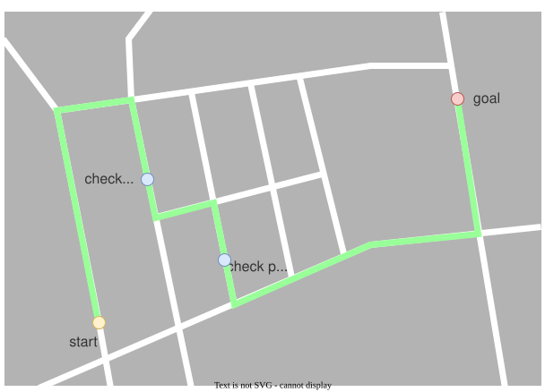 |
|
| 从路线规划路径 | 规划从给定路线出发要遵循的路径. 参考实现在 Behavior Path Planner 中. |
- 车道地图(驾驶车道) | 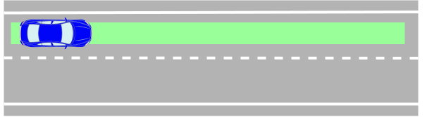 |
|
| 避障 | 通过转向作规划路径以避开障碍物. 参考实现在 Static Avoidance Module, Path Optimizer 中.在参数中启用标志： launch path_optimizer true |
- 对象信息 | 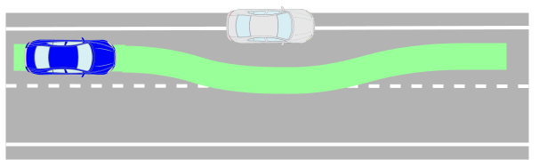 |
演示视频 |
| 路径平滑 | 规划路径以实现平稳转向. 参考实现在 Path Optimizer 中. |
- 车道地图(驾驶车道) | 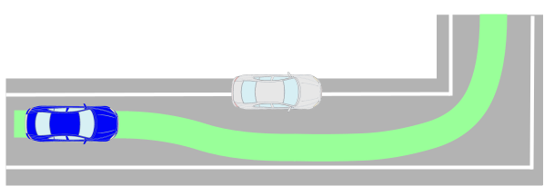 |
演示视频 |
| 狭小空间驾驶 | 规划在可驾驶区域内的行驶路径.此外,当无法在可驾驶区域内行驶时,请停车以避免离开可行驶区域. 参考实现在 Path Optimizer 中. |
- Lanelet map(高精度车道边界) | 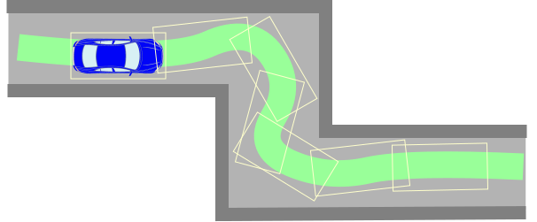 |
演示视频 |
| 变道 | 规划变道到达目的地的路径. 参考实现在 Lane Change 中. |
- 车道地图(驾驶车道) | 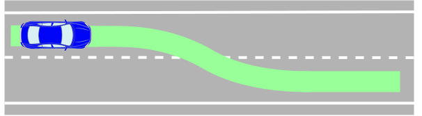 |
演示视频 |
| 拉边 | 规划靠边停车的路径. 参考实现在 Goal Planner 中. |
- Lanelet 地图 (肩车道) | 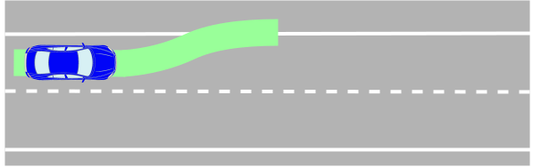 |
示范影片： 简单拉贴  弧形前拉  弧形向后拉  |
| 拉出 | 规划靠边停车路径,以便从路肩开始. 参考实现在 Start Planner 中. |
- Lanelet 地图 (肩车道) | 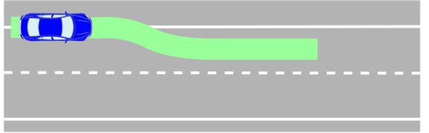 |
演示视频： 简单拉出  向后拉出  |
| 路径偏移 | 根据外部指令在横向规划路径. 参考实现在 Side Shift Module 中. |
- 无 | 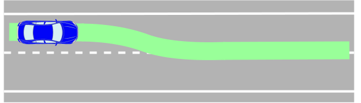 |
|
| 障碍物停止 | 规划为路径上的障碍物而停止的速度. 参考实现在 Obstacle Stop Planner, Obstacle Cruise Planner. launch obstacle_stop_planner 并启用标志： TODO, launch obstacle_cruise_planner 并启用标志： TODO |
- 对象资讯 | 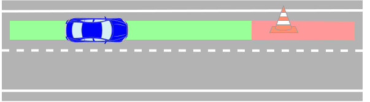 |
演示视频 |
| 障碍物减速 | 规划路径周围障碍物的减速速度. 参考实现在 Obstacle Stop Planner、Obstacle Cruise Planner 中. |
- 对象信息 | 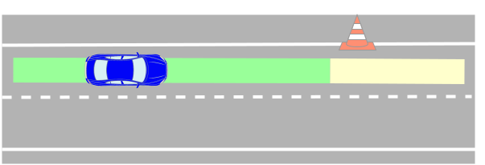 |
演示视频 |
| 自适应巡航控制 | 规划速度以跟随行驶在 ego 车辆前面的车辆. 参考实现在 Obstacle Stop Planner、Obstacle Cruise Planner 中. |
- 对象信息 | 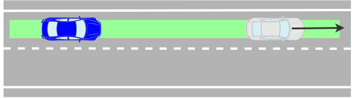 |
|
| 用于切入车辆的减速 | 规划速度以避免车辆切入自我车道的风险. 参考实现在 Obstacle Cruise Planner 中. |
- 对象信息 | 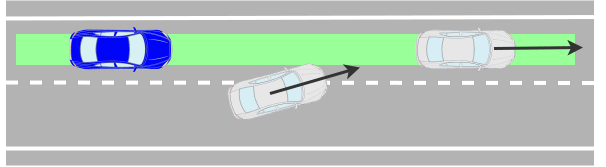 |
|
| 启动时的环绕声检查 | 规划速度以防止在车辆周围存在障碍物时移动. 参考实现在 Surround Obstacle Checker.在参数中启用标志： use_surround_obstacle_check true in tier4_planning_component.launch.xml < |
- 对象信息 | 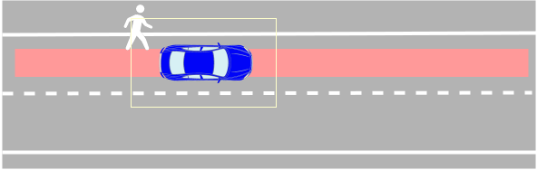 |
演示视频 |
| 曲线减速 | 规划速度以减慢曲线上的速度. 参考实现在 Motion Velocity Smoother 中. |
- 无 | 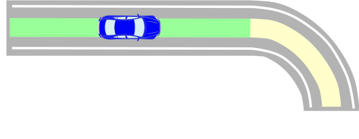 |
|
| 障碍物的曲线减速 | 规划速度以减慢曲线上的速度,以避免在路径周围发生障碍物碰撞的风险. 参考实现在 Obstacle Velocity Limiter 中. |
- 物体信息 - Lanelet 地图(静态障碍物) |
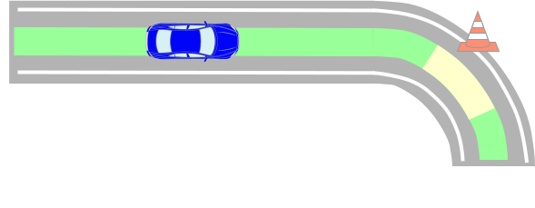 |
演示视频 |
| 人行横道 | 规划速度,以便行人接近或在人行横道上行走时停止或减速. 参考实现在 Crosswalk Module 中. |
- 物体信息 - Lanelet 地图(人行横道) |
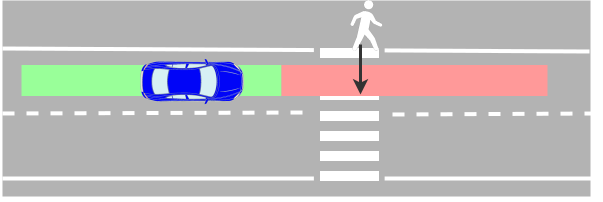 |
演示视频 |
| 路口迎面车辆检查 | 规划在十字路口右/左转的速度,以避免与迎面而来的其他车辆发生风险. 参考实现在 Intersection Module 中. |
- 对象信息 - 车道地图(交叉路口车道和让行车道) |
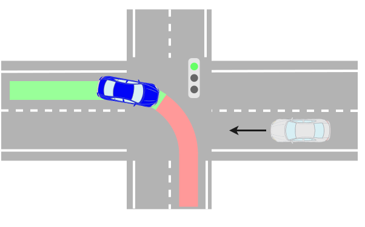 |
演示视频 |
| 交叉路口盲点检查 | 规划在十字路口右/左转的速度,以避免与来自盲点后面的其他车辆或摩托车发生风险. 参考实现在 盲点模块 中. |
- 对象信息 - 车道地图(交叉路口车道) |
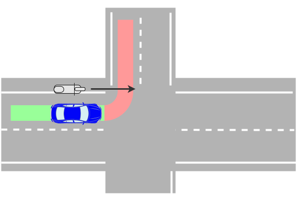 |
演示视频 |
| 交叉点遮挡检查 | 规划在十字路口右/左转的速度,以避免可能从遮挡区域驶来的车辆的风险. 参考实现在 Intersection Module 中. |
- 对象信息 - 车道地图(交叉路口车道) |
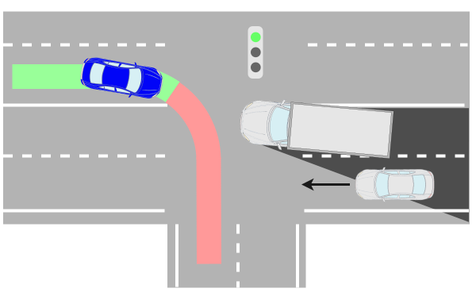 |
演示视频 |
| 路通拥堵检测 | 规划交叉路口的速度,以便在车辆因交通拥堵而停在前方时不进入交叉路口. 参考实现在 Intersection Module 中. |
- 对象信息 - 车道地图(交叉路口车道) |
 |
演示视频 |
| 红绿灯 | 根据交通信号规划交叉路口的速度. 参考实现在 Traffic Light Module 中. |
- 红绿灯颜色信息 | 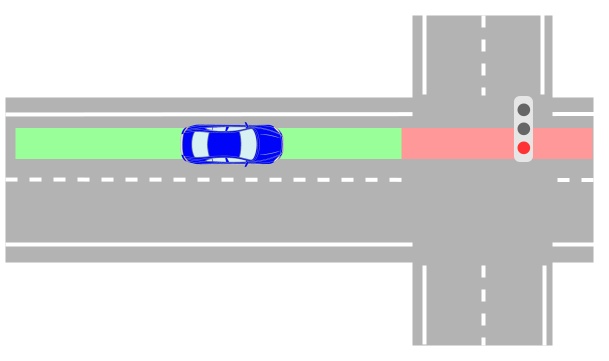 |
演示视频 |
| 跳动检查 | 规划速度以减速,以防止附近对象跑到路径中的可能性. 参考实现在 Run Out Module 中. |
- 对象信息 | 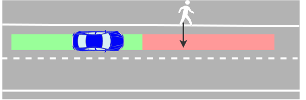 |
演示视频 |
| 停止线 | 规划速度以在停止线处停止. 参考实现在 Stop Line Module 中. |
- Lanelet 地图(停止线) | 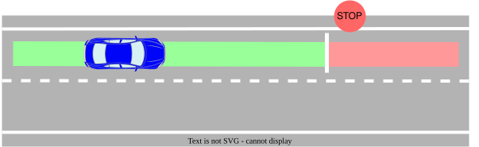 |
演示视频 |
| 遮挡点检查 | 规划从遮挡区域(例如,从大型车辆后面)跑出的对象的速度以减速. 参考实现在 Occlusion Spot Module 中. |
- 对象信息 - Lanelet 地图(私人/公共车道) |
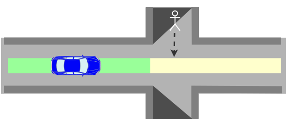 |
演示视频 |
| 禁止停车区 | 规划速度,不要在禁止停车的区域(例如消防站入口前)停车. 参考实现在 No Stopping Area Module 中. |
- Lanelet 地图(禁止停车区域) | 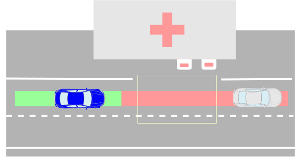 |
|
| 从私人区域合并到公共道路 | 规划从私人车道进入公共道路的速度,以避免与行人或其他车辆发生碰撞的风险. 参考实现在 Merge from Private Area Module 中. |
- 对象信息 - Lanelet 地图 (私家/公网) |
WIP | |
| 减速带 | 规划减速带的速度. 参考实现在 Speed Bump Module 中. |
- Lanelet 地图(减速带) | 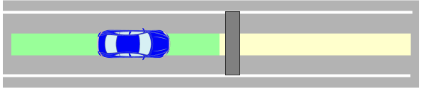 |
演示视频 |
| 检测区域 | 规划速度,以便在指定检测区域内存在相应的停止点处停止. 参考实现在 Detection Area Module. |
- Lanelet 地图(检测区域) | 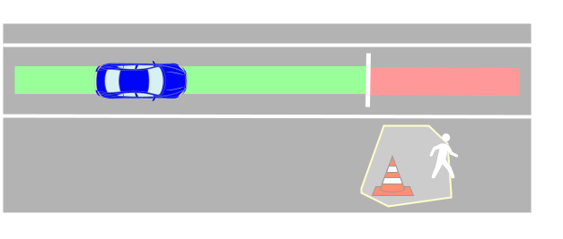 |
演示视频 |
| 禁止驾驶车道 | 规划速度以在离开 ODD (Operational Design Domain) 指定的区域之前停止,或者在自动驾驶模式从 ODD 车道外开始时停止车辆. 参考实现在 No Drivable Lane Module 中. |
- 车道地图(无可驾驶车道) | 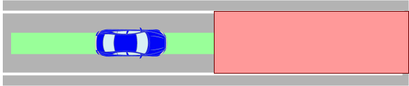 |
|
| 偏离车道时的碰撞检测 | 规划速度以避免在自主车辆偏离本车道时与另一车道行驶的其他车辆发生冲突. 参考实现在 Out of Lane Module 中. |
- 物体信息 - 车道地图(行车道) |
WIP | |
| 停车 | 为停车区的给定目标规划路径和速度. 参考实现在 Free Space Planner 中. |
- 物体信息 - Lanelet 地图(停车区) |
 |
演示视频 |
| 自动紧急制动 (AEB) | 如果预计会与前方物体发生碰撞,请执行紧急停止.需要注意的是,此功能应作为最终安全层,即使在定位或感知系统出现故障的情况下也应该有效. 参考实现在 Out of Lane Module 中. |
- 原始对象 | 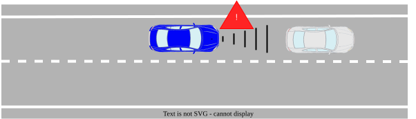 |
|
| 最低风险机动 (MRM) | 发生危险事件时提供适当的 MRM(最低风险机动)说明.例如,当发现传感器故障时,根据情况的严重性发送紧急制动、适度停止或靠边停车的指令. 参考实现在 TODO 中 |
- TODO | WIP | |
| 轨迹验证 | 检查计划的轨迹是否安全.如果不安全,请采取适当的措施,例如修改轨迹、停止发送轨迹或向自动驾驶系统报告. 参考实现在 Planning Validator 中. |
- 无 |  |
|
| Running Lane Map 生成 | 根据手动驾驶中记录的定位数据生成车道图. 参考实施正在开发中 |
- 无 | WIP | |
| Running Lane 优化 | 优化地图的中心线(参考路径),使其考虑到车辆运动学而平滑. 参考实现位于 静态中心线优化器. |
- 车道地图(行车道) | WIP |
参考实施#
下图描述了 Planning 组件的参考实现.通过添加新模块或扩展功能,可以支持各种 ODD.
Note某些实现由于实现困难而不遵守高级架构设计,需要updating.
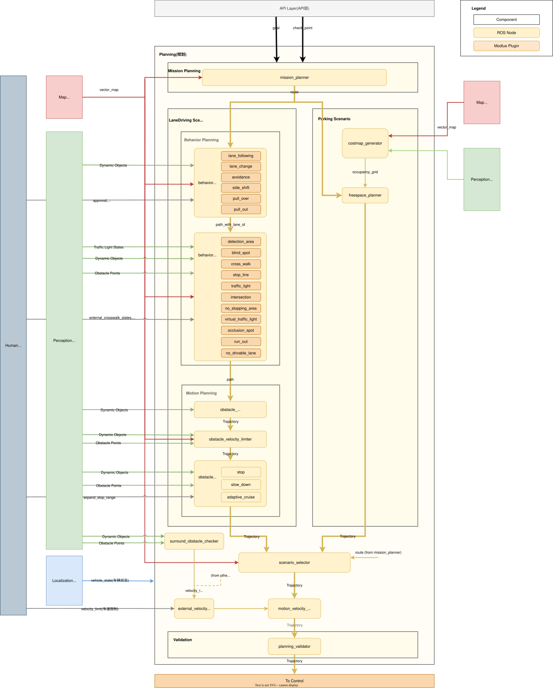
更多细节请参考每个封装中的设计文档.
- mission_planner：根据地图信息计算从起点到终点的路线.
- behavior_path_planner：根据交通规则计算路径和可行驶区域.
- behavior_velocity_planner：根据交通规则计算最大速度.
- obstacle_avoidance_planner：计算障碍物和可行驶区域约束下的路径形状
- surround_obstacle_checker：当自我车辆周围有障碍物时,保持车辆停止.它仅在车辆停止时起作用.
- obstacle_stop_planner：当轨迹上或附近有障碍物时,它会根据情况计算轨迹点的最大速度：停止、减速或自适应巡航(跟随汽车).
- costmap_generator：生成一个 costmap,用于从动态对象和车道信息生成路径.
- freespace_planner：考虑自由空间场景的可行性(例如曲率)计算轨迹.算法描述 here.
- scenario_selector ：根据当前场景选择轨迹.
- external_velocity_limit_selector：从多个候选者中获取适当的速度限制.
- motion_velocity_smoother：考虑速度、加速度和加加速度约束计算最终速度.
当前实现中的重要信息#
与高级设计相比,一个重要的区别是 引入场景层 和 行为和运动的明确分离 .这些是由于当前的性能和实施挑战而引入的.是将这些定义为高级设计的一部分,还是将其改进作为实现的一部分,这是一个讨论的问题.
情景规划层简介#
在结构良好的车道上行驶和在停车场等自由空间区域行驶对接口有不同的要求.例如,虽然 Lane Driving 可以处理具有地图 ID 的路线,但这并不适合在可用空间中进行规划.在场景层面(Lane Driving、Parking 等)切换规划子组件的机制使界面设计更加灵活,但存在模块在不同场景下复用的缺点.
行为和动作的分离#
规划的经典方法之一涉及将其分为决定动作的 行为 和决定最终动作的 运动 .但是,这种分离意味着与性能的权衡,因为性能往往会随着函数分离的增加而降低.例如,Behavior 需要在事先了解 Motion 最终将执行的计算的情况下做出决策,这通常会导致保守的决策.另一方面,如果行为和运动集成在一起,运动性能和决策就会变得相互依赖,从而在可扩展性方面带来挑战,例如当您希望仅扩展决策功能以遵循区域交通规则时.
要了解这一背景,这个 先前讨论的文档 可能会有所帮助.
自定义当前实现中的功能#
虽然可以在当前实现中添加模块级功能,但并未为所有功能提供统一的接口.以下是当前实现中 module 级别的 extend 方法的简要说明.
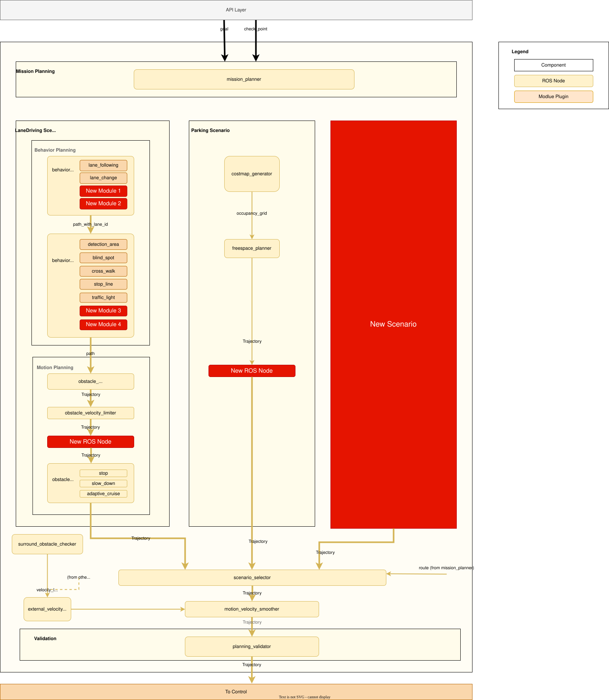
以 behavior_velocity_planner 或 behavior_path_planner 添加新模块#
behavior_path_planner 和 behavior_velocity_planner 等 ROS 节点具有通过插件提供的模块接口.通过根据这些 ROS 节点中定义的模块接口添加模块,可以动态加载/卸载模块.具体添加模块的方法,请参考各 package 的文档.
在 planning 组件中添加一个新的 ros 节点#
在 Motion Planning 中添加模块时,需要将模块创建为 ROS 节点,并将其集成到 Planning 组件中.当前的配置涉及将信息添加到上游计算的目标轨迹中,在此过程中引入 ROS 节点可以扩展功能.
添加或替换为场景#
目前的实现引入了场景级的 switch logic 作为集中切换多个 modules 的方法.这允许添加新场景(例如,高速公路驾驶).
通过创建一个场景作为 ros 节点并将 scenario_selector ros 节点与其对齐,集成就完成了.这样做的好处是,您可以引入重要的新功能,而不会影响其他场景(如 Lane Driving)的实施.但是,它只允许通过场景切换进行场景级协调,不支持现有规划模块级别的协调.